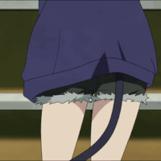

클루카이 나 보고 가라
댓글

클루카이나 보라카이
당끼댄스
요즘 저 춤 자주보이던데 개귀여움
내 아내임
미간 넓은 귀상어잖아
성형했다고
HKM4
이거 춤추는 코스프레녀 찾아줘
악어돌던지는 영상이 여기까지 올줄이야
ㅋㅋㅋ
"흥국이"
흥국

클루카이나 보라카이
당끼댄스
요즘 저 춤 자주보이던데 개귀여움
내 아내임
미간 넓은 귀상어잖아
성형했다고
HKM4
이거 춤추는 코스프레녀 찾아줘
악어돌던지는 영상이 여기까지 올줄이야
ㅋㅋㅋ
"흥국이"
흥국
젖탱이보소